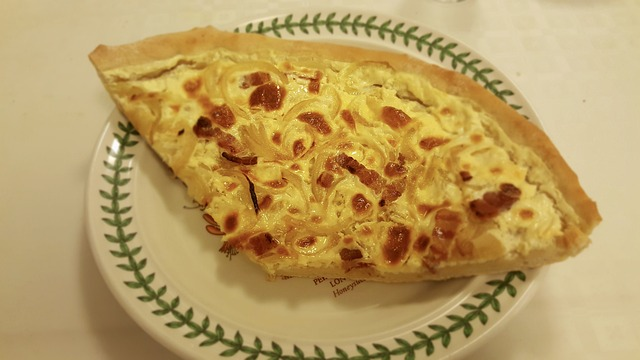

Quiche Lorraine

Description
Quiche is a French tart consisting of pastry crust filled with savoury custard or cream and can include pieces of cheese, meat/seafood, or vegetables. Quiche Lorraine is a well-known variant that includes lardons or bacon (or ham). Quiche can be served hot, warm, or cold.
Ingredients
Ingredients and steps obtained from BBC Good Food article 'Ultimate quiche lorraine'
- 175g plain flour
- 100g cold butter, cut into pieces
- 1 egg yolk
- 200g pack lardons, unsmoked or smoked
- 50g gruyere
- 200ml carton creme fraiche
- 200ml double cream
- 3 eggs, well beaten
- pinch of ground nutmeg
Steps
- For the pastry, put 175g plain flour, 100g cold butter, cut into pieces, 1 egg yolk and 4 tsp cold water into a food processor. Using the pulse button, process until the mix binds.
- Tip the pastry onto a lightly floured surface, gather into a smooth ball, then roll out as thinly as you can.
- Line a 23 x 2.5cm loose-bottomed, fluted flan tin, easing the pastry into the base.
- Trim the pastry edges with scissors (save any trimmings) so it sits slightly above the tin (if it shrinks, it shouldn't now go below the level of the tin). Press the pastry into the flutes, lightly prick the base with a fork, then chill for 10 mins.
- Put a baking sheet in the oven and heat oven to 200C/fan 180C/gas 6. Line pastry case with foil, shiny side down, fill with dry beans and bake on the hot sheet for 15 mins.
- Remove foil and beans and bake for 4-5 mins more until the pastry is pale golden. If you notice any small holes or cracks, patch up with pastry trimmings. You can make up to this point a day ahead.
- While the pastry cooks, prepare the filling. Heat a small frying pan, tip in 200g lardons and fry for a couple of mins. Drain off any liquid that comes out, then continue cooking until the lardons just start to colour, but aren't crisp. Remove and drain on paper towels.
- Cut three quarters of the 50g gruyère into small dice and finely grate the rest. Scatter the diced gruyère and fried lardons over the bottom of the pastry case.
- Using a spoon, beat 200ml crème fraîche to slacken it then slowly beat in 200ml double cream. Mix in 3 well beaten eggs. Season (you shouldn't need much salt) and add a pinch of ground nutmeg. Pour three quarters of the filling into the pastry case.
- Half-pull the oven shelf out and put the flan tin on the baking sheet. Quickly pour the rest of the filling into the pastry case - you get it right to the top this way. Scatter the grated cheese over the top, then carefully push the shelf back into the oven.
- Lower the oven to 190C/fan 170C/gas 5. Bake for about 25 mins, or until golden and softly set (the centre should not feel too firm).
- Let the quiche settle for 4-5 mins, then remove from the tin. Serve freshly baked, although it’s also good cold.